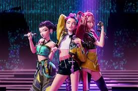
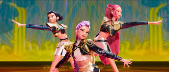

June 20th: Hey Hunters! CAN WE TALK ABOUT THE IDOL AWARDS HELLO?!?
LIKE BOTH GROUPS HAD GREAT PERFORMANCES!? HUNTRIX was better of course ;) .
In the first half we got HUNTRIX dropping a new song in the middle of performing Golden *which sounded like a Saja Boys disstrack* but it then the girls LITERALLY BROKE UP MID PERFORMANCE!?!!! NO ONE KNEW WHAT WAS GOING ON, so then I guess the Saja Boys performed a few minutes after *I'm sure the Pride was happy :/. I kinda got worried for a second since I was really into "idol" *like REAAALLY INTO IT*. the Saja boys LITERALLY almost whisked me away.
But then HUNTRIX suddenly reunited?! They had different costumes and WERE JUST FLOATING SO GRACEFULLY LIKE aohsrdg;ijadrjkbg!?! THAT'S ACTUALLY SO GENUIS AND HOW THEY UPPED THEIR EFFECTS AND STUFF!?!?!?
I'm just so happy that whatever happened between the girls got resolved, but I've also haven't seen the Saja boys since then? Probably a hiatus. That's all for now hunters see you next time!!
June 17th: I was walking home tonight and I could've sworn I heard singing?! Like I thought I was hearing Rumi?!
